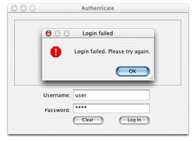

Now that you have a user interface for the login window, you need to add logic to authenticate users. The first step is to extract the values of the two text fields in the nib file. To do this, you need access to the text fields in the nib file's controller class, as described in "Programmatic Access to Interface Components". Add an instance variable of type EOTextField for both of the text fields in the nib file. The instance variable's names must correspond to the name of the outlets with which the text fields are connected.
public EOTextField username, password;
Now, add methods for the actions you added to the nib file.
You added two actions, clear and login,
so add two methods with those names to the nib file's controller
class.
public void login() {}
public void clear() {}
The clear method simply clears the
values of the text fields. Add this code to it:
username.setText("");
password.setText("");
The login method
authenticates users by sending the user-entered values from the
User Name and Password text fields to remote methods on the server-side
application, which query a data store to perform the authentication.
If a user successfully authenticates, the client-side method that
invoked the server-side method receives an object (an EOGlobalID)
representing the user who authenticated.
Add the method in Listing 20-1 to the nib file's controller class to perform
the remote method invocation. If the user successfully authenticates,
the method returns true.
Listing 20-1 Client-side login method
public boolean clientSideRequestLogin() {
EOGlobalID person =
(EOGlobalID)(_distributedObjectStore().invokeStatelessRemoteMethodWithKeyPath(
"session", "clientSideRequestLogin", new Class[] {String.class, String.class},
new Object[] {username.getText(), password.getText()}));
if (person != null) {
EOEditingContext ec = new EOEditingContext();
_user = (Person)(ec.faultForGlobalID(person, ec));
return true;
}
else
return false;
}
Remember to also add the method that returns the client's parent object store, as described in "Distributed Object Store" since the remote method invocation is invoked on the client's parent object store.
Now, invoke the client-side method clientSideRequestLogin in
the login method, adding a
conditional based on the response, as shown in Listing 20-2.
Listing 20-2 login method
public void login() {
if (this.clientSideRequestLogin()) {
//allow user into application
}
else {
EODialogs.runErrorDialog("Login failed", "Login failed. Please try
again.");
}
}
This is all you need to do on the client side. Now, you need
to add the method on the server-side that actually performs the
authentication. The remote method invocation specifies the keypath
"session" and the method clientSideRequestLogin,
so add a method in Session.java with
that name, as shown in Listing 20-3.
Listing 20-3 Authentication
in Session.java
public EOGlobalID clientSideRequestLogin(String username, String password) {
EOGenericRecord user;
EOEditingContext editingContext = new EOEditingContext();
NSMutableDictionary userCredentials = new NSMutableDictionary();
userCredentials.setObjectForKey(username, "username");
userCredentials.setObjectForKey(password, "userPassword");
NSArray foundObjects = EOUtilities.objectsMatchingValues(editingContext, "Person",
userCredentials);
if (foundObjects.count() == 1) {
user = (EOGenericRecord)foundObjects.objectAtIndex(0);
return(editingContext.globalIDForObject(user));
}
else {
return null;
}
}
This method constructs a dictionary based on the values passed
in from the client side (the user-entered name and password). Then,
using the class com.webobjects.eoaccess.EOUtilities,
the method performs a fetch against the data store in the Person
entity. If a record matching the user's credentials is found,
the method returns the EOGlobalID for that user.
The client-side method clientSideRequestLogin receives
the result of this method, and if it is not null,
allows the user into the application. If it receives null,
however, it displays a dialog with an error message, as shown in Figure 20-7.
Figure 20-7 Login failed
Of course, authentication fails if you don't add users to the entity in the data store on which you perform the fetch specification, so remember to add users.